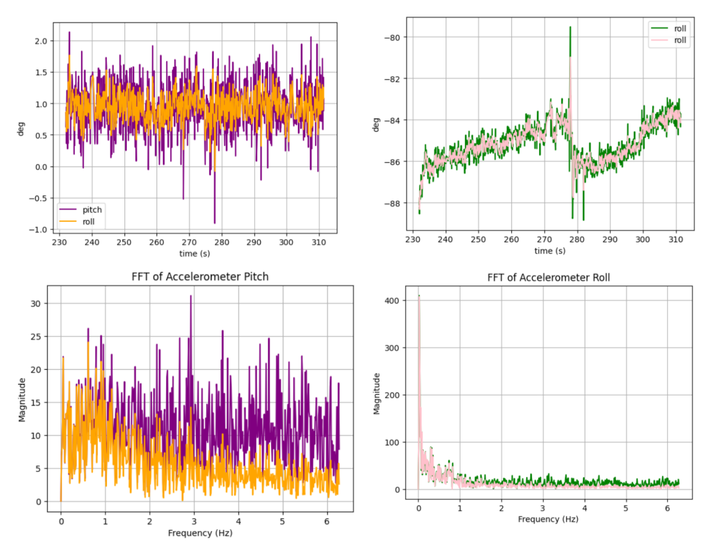

Lab 2: Artemis + Bluetooth
Set up the IMU

I wrote code to alternatively light up the LED twice to mark the starting. It lights up first when the connection works at the beginning, so the video includes three flashes.
// LED light up two times with an interval of two seconds
digitalWrite(LED_BUILTIN, HIGH);
delay(1000);
digitalWrite(LED_BUILTIN, LOW);
delay(2000);
digitalWrite(LED_BUILTIN, HIGH);
delay(1000);
digitalWrite(LED_BUILTIN, LOW);
AD0_VAL definition discussion: AD0_VAL represents a constant reflecting the state of an ADR jumper. When the ADR jumper is open, AD0_VAL should be 1. While the ADR jumper is closed, AD0_VAL should be 0. It should be 1 now as the ADR jumper is not soldered. If the ADR jumper is soldered, it can enable multiple sensors to be on the same I2C bus.


Picture above in order demonstrate rotation along X axis, flip along Y axis, and speedup along X axis.
Accelerometer


//Calculation of angles of Pitch/Roll in degrees
acc_roll = atan2(ay, az) * 180.0 / M_PI;
acc_pitch = atan2(-ax, sqrt(ay*ay + az*az)) * 180.0 / M_PI;
I directly used data point from output of pitch and roll to conduct the two-point calibration:
Average Pitch Degrees in negative direction: -86.23 degrees
Average Pitch Degrees at zero: 0.06 degrees
Conversion factor: (0-(-90))/(0.06-(-86.23))= 1.043
Average Roll Degrees in negative direction: -87.66 degrees
Average Roll Degrees at zero: 0.06 degrees: 0.49 degrees
Conversion factor: (0-(-90))/(0.49-(-87.66))= 1.021
Average Conversion Factor: (1.021+1.043)/2 = 1.032
Therefore, I think my accelerometer is relatively accurate with a 3.2% error.
In the process of ploting and noise analysis in the frequency spectrum, I got to review concepts of start_notify and send_command again: start_notify is to have python on to listen/wait for arduino actions; seond_command is to have arduino take the action and have notification handler run. Before I started the notification and sent the command, I added clearing to all the lists to ensure they are empty before the calling of the notification handler. Besides, I added add_list = True to filter out the BLE messages before calling the GET_ACC function from the arduino.
time_list.clear()
acc_pitch_list.clear()
acc_roll_list.clear()
add_list = True
ble.start_notify(ble.uuid['RX_STRING'], notification_handler)
ble.send_command(CMD_lab2.GET_ACC, "")
However, I can exactly see the difference when I try to shake it at a constant frequency in the time spectrum. In the frequency spectrum, I see obvious peaks between 4-6 Hz despite the spike at 0 Hz for roll. I think it is safe to adopt a cut off frequency at 6Hz, as a low pass filter will intentionally preserve the low-frequency motion with erasing high-frequency noises. If I pick a lower frequency than that, there will be a chance that the interesting motion I want to capture will be cut off. Based on my graph, I picked 2.5 Hz as my cut-off frequency.  A filter at array size of 600 previously would not be able to achieve suppressing noises strongly. The current alpha is 0.4895 with an array size of 1000 compared to previously 0.627, which achieves a a better filter. Throughout the debugging process, I learned to put _static_ inside the function for input angles and checkfirst boolean function to _enables the variables to remember their last values from changes_ inside the function until the next time it runs again.
Gyroscope
Sample Data
Record a Stunt
Watch the video of RC car exploring its first steps as A RC CAR in Philips hallwayReference
...$\tau = RC = frac{1}{2pif_c} = 0.0637$ $\alpha = frac{dt}{tau + dt} = 0.4896 $